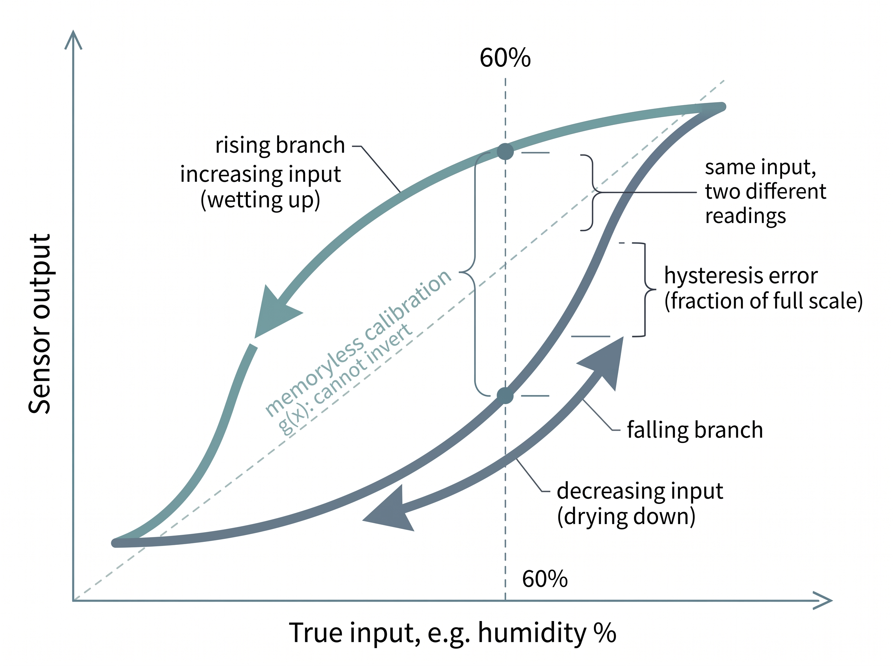

"Noise I can average away. Bias just lies to me politely, drift lies a little more each day, hysteresis lies about where it has been, and saturation stops answering the question entirely."
A Weary AI Agent
The big picture
The previous section treated the error term \(\eta\) as random noise, the kind that shrinks when you average. This section is about the errors that do not shrink. Bias, drift, hysteresis, and saturation are systematic distortions: they are baked into the sensor response \(h\) itself, not sprinkled on top of it. Averaging a thousand readings from a biased sensor gives you a very precise wrong answer. These four failure modes are the reason a model that scored perfectly in the lab can quietly rot in the field, and recognizing them by their fingerprints is a core skill for anyone who ships perception on real hardware.
A pulse oximeter that reports a steady but wrong oxygen level, or a gyroscope whose zero creeps as it warms, can pass every repeatability test and still send a model quietly off the rails; these systematic errors are the ones no amount of extra data can cure, and mistaking them for noise is how field deployments fail. Recall the measurement model from Chapter 1, \(x = h(s) + \eta\). Section 2.3 put all sensor imperfection into \(\eta\) and showed how to beat it down with signal-to-noise ratio. That framing hides a trap: it suggests every error is zero-mean and independent, so more data always helps. It is not, and it does not. The four phenomena in this section are deformations of \(h\) with structure and memory. You need only functions, a little calculus, and the probability intuitions that Chapter 4 makes rigorous. We take each in turn, name its fingerprint, and say what to do about it.
Bias: a constant lie
What it is. Bias (also called offset) is a constant additive error. The response is really \(x = h(s) + b + \eta\), where \(b\) does not depend on the state \(s\) or on time. A scale that reads 0.3 kg with nothing on it has a bias of 0.3 kg; every reading is inflated by the same amount.
Precisely, bias is the fixed component of error that remains after the random part averages to zero. It shows up as a nonzero mean of the residual \(x - h(s)\) (the reading minus the ideal noise-free response), taken over many readings at a fixed state. It matters because it is the one error mode that more data cannot touch: every additional sample carries the same \(b\), so the sample mean converges to the truth plus \(b\), never to the truth. Mechanically it arises from a shifted reference point, a miswired zero, a thermal offset in the front-end electronics, or an aging component, all of which displace the whole response curve vertically. Reach for a bias correction (a tare or zero step) when the offset is stable over your measurement window; if it wanders, you need the drift machinery of the next subsection instead.
Why it earns its own name. Because it survives everything you would normally do to clean a signal. It is not zero-mean, so time-averaging preserves it exactly; it is not high-frequency, so a low-pass filter passes it straight through. Bias attacks accuracy (closeness to truth) while leaving precision (repeatability) untouched, so a biased sensor can look reassuringly stable and be reliably wrong. In estimation terms it inflates the estimator bias while doing nothing to variance, which is exactly the axis that more samples cannot fix. In short: the errors worth naming are the ones that survive averaging, so you model them into the estimator rather than hope more data washes them out.
Common Misconception
The misconception is that collecting more data averages the error away. Readers internalize the noise result from the previous section, where the sample mean converges to the truth, and assume it holds for every error. It does not: averaging kills only the zero-mean random part, so with a bias \(b\) the mean converges to truth plus \(b\), and ten thousand readings buy you a more precise wrong answer rather than a more accurate one. Sample count fixes variance, never a systematic offset.
How to handle it. Measure it and subtract it. A one-time calibration under a known reference (a zeroing step, a tare) yields \(\hat b\), and you report \(x - \hat b\). The whole reason zeroing a scale before weighing works is that bias is stationary: what you measure at reference time still holds at measurement time.
Drift: bias that will not sit still
What it is. Drift is bias that changes slowly with time, temperature, or age: \(b \to b(t)\). Two flavors dominate. Deterministic drift follows a trend, often roughly linear, \(b(t) \approx b_0 + \beta t\), as a chemical electrode ages or a component warms up. Stochastic drift is a random walk, \(b(t{+}1) = b(t) + w_t\) with small independent steps \(w_t\); it has no trend to extrapolate, yet it wanders unboundedly far given enough time.
Why it is worse than bias. A one-time calibration expires: the \(\hat b\) from this morning is stale by afternoon, and for the random-walk kind, without bound. Hence recalibration schedules, and hence hopeless uncorrected inertial navigation: integrating a drifting gyroscope bias turns a tiny rate error into a linearly growing angle error, and then, because that heading error feeds a sideways velocity component that is integrated a second time into position, a position error that grows as time squared.
In practice: the gyroscope that flew the drone into a wall
A delivery drone holds heading between Global Positioning System (GPS) fixes using a microelectromechanical systems (MEMS) gyroscope, integrating angular rate into orientation. On the bench the gyro reads a steady \(0.6^\circ/\text{s}\) with the drone sitting perfectly still: a pure bias. The flight team zeroes it at power-on and forgets it. But the bias drifts with the electronics warming in flight, adding perhaps \(0.4^\circ/\text{s}\) over ten minutes. Integrated, that unmodeled drift accrues into tens of degrees of heading error, and dead reckoning walks the estimated position steadily away from the true one until the next GPS fix snaps it back, or until there is no next fix indoors and the drone clips a loading-dock pillar, where dead reckoning is estimating current position by integrating motion outward from a known starting point, with no external fix to correct it. The fix is not a better one-time calibration; it is to estimate the bias online as part of the state, which is precisely what the augmented-state filters (which add the unknown bias to the list of quantities the filter tracks and estimate it alongside the signal) of Chapter 24 do.
Step-Through: how a drifting gyro bias corrupts a heading estimate
Trace the drone's dead reckoning with a tiny example, integrating angular rate once per second for five seconds at a true heading that never changes (the drone flies dead straight, so the true heading stays \(0^\circ\)). The gyro carries a bias that starts at \(0.6^\circ/\text{s}\) and drifts up by \(0.1^\circ/\text{s}\) each second as the electronics warm.
- t = 1 s: bias reads \(0.6\), heading estimate \(= 0 + 0.6 = 0.6^\circ\). True heading \(0^\circ\), error \(0.6^\circ\).
- t = 2 s: bias now \(0.7\), heading \(= 0.6 + 0.7 = 1.3^\circ\). Error \(1.3^\circ\).
- t = 3 s: bias \(0.8\), heading \(= 1.3 + 0.8 = 2.1^\circ\). Error \(2.1^\circ\).
- t = 4 s: bias \(0.9\), heading \(= 2.1 + 0.9 = 3.0^\circ\). Error \(3.0^\circ\).
- t = 5 s: bias \(1.0\), heading \(= 3.0 + 1.0 = 4.0^\circ\). Error \(4.0^\circ\).
A pure bias would grow the error linearly (\(0.6, 1.2, 1.8, \dots\)); the added drift bends it upward faster, to \(4.0^\circ\) instead of \(3.0^\circ\) after five seconds. A one-time tare at \(t=0\) subtracts only the initial \(0.6\), leaving the whole drifting remainder to integrate unchecked. That accelerating divergence is exactly why the fix is to estimate the bias online rather than calibrate it once.
Key insight
Bias is a stationary offset you calibrate once; drift is a non-stationary offset you must track. The moment an error term has memory, the right home for it is not a preprocessing constant but a slot in the estimator's state vector, where a recursive filter can chase it. This is the conceptual bridge from static calibration to the Kalman family: model the drift as a slow random walk and let the filter separate it from the signal you actually want.
Research Frontier
This section models drift and bias as a hand-specified random walk with variances you tune by feel. The frontier is to learn those error terms from data. AirIMU (Qiu, Wang and colleagues, 2023) trains a neural network to predict per-sample inertial measurement unit (IMU) bias corrections and, crucially, the noise covariance itself, then feeds both into a differentiable inertial-odometry pipeline; letting the data set the process and measurement uncertainties, rather than a human tuning them, is reported to cut dead-reckoning drift substantially over classic hand-tuned filters. The lesson generalizes past inertial sensors: the same learned-covariance idea is being applied to correct temperature-dependent bias and hysteresis in gas, magnetic, and strain sensors, turning the fixed error models of this section into calibrated, input-conditioned ones.
Real-World Application: aerospace-grade inertial navigation
The VectorNav VN-100, an industrial MEMS IMU used on drones and robots, runs an onboard extended Kalman filter (a recursive estimator that updates its guess of the hidden state each time a new measurement arrives) that continuously estimates and subtracts each gyroscope's slowly drifting bias while the unit is running, rather than trusting a single power-on calibration. This is the augmented-state trick made concrete: bias is a tracked element of the filter state, so warm-up drift and long-term aging are chased in real time instead of accumulating into heading error. The same architecture in practice scales down to the IMU in a phone and up to the fiber-optic gyros in an airliner.
Hysteresis: the sensor remembers where it came from
Drift gave the error a memory of time; the next failure mode gives it a memory of path, a dependence not on when you measured but on how the input arrived at its current value.
What it is. Hysteresis is path dependence: the output at a given state \(s\) differs depending on whether \(s\) was approached from below or from above. Plot output against a slowly rising-then-falling input and you get a loop, not a line. Ferromagnetic sensors, many humidity sensors, mechanical strain gauges, and any component with internal friction or material relaxation show it. The gap between the rising and falling curves, expressed as a fraction of full scale, is the hysteresis error.
Mental Model
Think of a memory-foam mattress. Press your hand into it, lift off, and the surface does not spring back to its original shape: the dent lingers, so how deep the foam sits right now depends on where and how hard you pressed a moment ago, not on the current load alone. If you press to the same depth from a flat start versus from an already-dented spot, you meet different resistance. A hysteretic sensor works the same way internally: the material stores a memory of its recent excursions and relaxes back only partway, so the reading you get at humidity 60% differs depending on whether you arrived by wetting up or drying down. The output tracks the input's history of dents, which is exactly why a single flat calibration curve, blind to that history, cannot recover the true state.
Why it breaks naive correction. Bias and even drift are functions the current input can undo, but hysteresis makes the output a function of the input's history. No single number inverts it, and no memoryless calibration curve \(g(x)\) does either. Two different true states legitimately produce the same reading. A humidity sensor climbing from 30% to 60% and one falling from 90% to 60% can both display 58%. Any correction has to know the direction of travel. That requires memory, which pushes you again toward a stateful model rather than a lookup table. In practice you handle it by making the correction direction-aware: track whether the input is rising or falling and apply the matching branch of the loop, or fit an explicit hysteresis model (such as a Preisach or play operator) that carries the needed memory of past excursions. Figure 2.4.2 illustrates a hysteresis loop and path dependence.

Common Misconception
"I fit a calibration polynomial, so the sensor is corrected." A memoryless polynomial \(g(x)\) can undo a nonlinear but single-valued response, and it can undo a fixed bias, but it cannot undo hysteresis, because hysteresis is not a function of the current reading at all. Fitting one curve through a hysteresis loop splits the difference and leaves a direction-dependent residual that changes sign depending on whether the measurand is rising or falling. That sign flip is the tell.
The word "hysteresis" was born in a magnetism lab
The term was coined in 1881 by the Scottish physicist James Alfred Ewing, who was studying how iron magnetizes and demagnetizes. He borrowed the Greek word husteresis, meaning "a coming later" or "shortcoming," to capture how the magnetization always lagged behind the applied field, tracing a loop instead of a line. The delightful twist: Ewing observed that a wire's magnetic memory could be shaken loose by mechanical vibration, so tapping a magnetized rod partly erased its history. That is the same effect behind an old trick for sticky analog gauges: a gentle tap on the glass jars the needle past its internal friction and hysteresis, letting it settle closer to the true reading. The correction is literally to knock the memory out of the sensor.
Saturation: when the sensor stops listening
Hysteresis at least keeps answering, if ambiguously; the last failure mode is the one where the sensor stops answering altogether once the input pushes past the edge of its range.
What it is. Every real sensor has a finite range (revisit Section 2.2 on dynamic range). Past the top or bottom of that range the response flattens: the output clips at \(x_{\max}\) no matter how large the true state grows. Formally \(x = \min(h(s), x_{\max})\) at the top rail, with the analogous floor at the bottom. An accelerometer rated to \(\pm 16g\) reports \(16g\) for a \(40g\) impact, and reports it with perfect, useless steadiness.
Why it is uniquely dangerous. Saturation destroys information rather than distorting it, and it does so silently. A clipped reading is not merely inaccurate; it is censored, an inequality (\(s \ge s_{\text{sat}}\)) masquerading as an equality. Worse, saturation is most likely exactly when the state is most extreme, which is often exactly when it matters most: the crash sensor rails out during the crash, the microphone clips during the gunshot, the current sensor pins during the fault. A model trained on nicely-in-range lab data has never seen the flat top and will read it as a genuine plateau. The honest response is to flag saturated samples as censored and let downstream inference treat them as bounds, a theme Chapter 5 picks up with missing and corrupted data.
Checkpoint
So far: bias holds a constant gap, drift lets that gap wander over time, hysteresis makes the reading depend on the direction the input arrived from, and saturation clips the output flat and censors the extremes; the first three distort what the sensor reports, while saturation deletes it outright.
Seeing all four in one signal
These distortions rarely arrive alone. Before stacking them in code, it helps to fix each one's visual signature in mind. The four panels of Figure 2.4.1 plot each failure mode as sensor output (solid) against the true measurand (dashed), so bias reads as a parallel gap, drift as a widening wedge, hysteresis as a loop, and saturation as a flat rail. The short simulation below then stacks bias, linear-plus-random-walk drift, and hard saturation onto a clean sinusoid so you can watch each fingerprint appear. It is the seed of Lab 2, where you will quantify how each one degrades a classifier and an anomaly detector.
import numpy as np
rng = np.random.default_rng(0)
t = np.linspace(0, 20, 2000)
s = 3.0 * np.sin(0.5 * t) # clean measurand h(s)
bias = 0.8 # constant offset b
drift = 0.05 * t # deterministic ramp
drift += np.cumsum(rng.normal(0, 0.01, t.size)) # random-walk drift
noise = rng.normal(0, 0.10, t.size) # ordinary zero-mean noise
x = s + bias + drift + noise # systematic errors do NOT average away
x_sat = np.clip(x, -3.5, 3.5) # saturation: censors the extremes
censored = (x_sat != x) # flag saturated samples as bounds
print(f"true mean {s.mean():+.3f} observed mean {x_sat.mean():+.3f}")
print(f"samples lost to saturation: {censored.sum()} of {t.size}")censored mask records which samples are inequalities rather than measurements. Feed x_sat and censored into Lab 2 to measure the accuracy each error mode costs.The right tool: online drift estimation without hand-rolling a filter
Tracking a random-walk bias by hand means writing the predict/update recursion, tuning process and measurement variances, and validating the whole thing: roughly fifty lines before it works. A maintained filtering library collapses that to a few:
from filterpy.kalman import KalmanFilter
kf = KalmanFilter(dim_x=2, dim_z=1) # state = [signal, slow bias]
# ... set F, H, Q (small on bias), R once ...
for z in x_sat: # skip z where censored[k] is True
kf.predict(); kf.update(z) # kf.x[1] is the tracked drift estimatefilterpy. Modeling the bias as a second state with tiny process noise lets the filter separate the wandering offset from the signal. The library supplies the numerically-stable recursion and covariance bookkeeping you would otherwise write and debug; you provide only the model matrices. About fifty lines become five.Exercise
Take the simulation above and, for each of the four phenomena, design a one-line diagnostic that detects it from data alone:
- Bias: what statistic of the residual against a known reference reveals a nonzero constant offset?
- Drift: how would you test whether the residual has a trend rather than a fixed offset? (Hint: split the record in half.)
- Hysteresis: sweep the input up then down over the same range; what comparison between the two passes exposes the loop?
- Saturation: what pattern in the histogram of \(x\) betrays a clipped rail?
Hint
Saturation piles probability mass into a single bin at the rail value, so the histogram shows an anomalous spike at \(x_{\max}\). Drift shows up as a difference in mean residual between the first and second halves of the record; a pure bias shows the same nonzero residual in both halves.
Self-check
- You average ten thousand readings and the estimate is still off by a fixed amount. Which of the four phenomena is ruled out, and which two are the leading suspects?
- Why can a memoryless calibration curve \(g(x)\) correct a fixed bias but never correct hysteresis?
- A crash sensor reads exactly \(16g\) for a full 20 ms during an impact. Why is treating that as "the acceleration was 16g" a dangerous mistake, and what should the value be treated as instead?
Try It: Fingerprint the four failure modes
Reproduce and detect each distortion end to end on your laptop with only numpy and matplotlib (add scipy for step 4).
- Paste the simulation above into a script and plot
s,x, andx_satagainstton one axis so you can see the clean signal, the systematically corrupted signal, and the clipped version together. - Detect bias plus drift: compute the residual
r = x - s, then split it in half and printr[:1000].mean()andr[1000:].mean(). A nonzero first-half mean is bias; a difference between the two halves is drift. - Detect saturation: plot
plt.hist(x_sat, bins=80)and confirm the anomalous spikes of piled-up mass sitting exactly at the-3.5and3.5rails, then verifycensored.sum()matches the count in those two bins. - Provoke hysteresis: build a slow triangle input
u = np.concatenate([np.linspace(0,1,500), np.linspace(1,0,500)]), pass it through a lagging responsey = scipy.signal.lfilter([0.1],[1,-0.9], u), and plotyagainstu: the up-sweep and down-sweep trace a loop rather than a single line. - Write a one-line verdict for each phenomenon (mean offset in mV, half-to-half drift, fraction of samples censored, loop width as a percent of full scale) so you have a reusable diagnostic report you can point at any real sensor log.
Lab: Allan deviation, reading drift straight off a real IMU log
Goal. Measure the bias-instability and random-walk fingerprints of an actual MEMS gyroscope and watch them separate on a single log-log plot, so the abstract "deterministic ramp plus random walk" of this section becomes a curve you can point at.
Tools. Python with numpy, matplotlib, and allantools (pip install allantools). For data, record about 30 minutes of a phone lying perfectly still using any IMU-logger app, or download a stationary segment of the gyroscope channel from the public EuRoC MAV dataset. You want raw angular-rate samples at a known constant rate with the device motionless, so every wiggle is sensor error, not motion.
What to do and vary. Load one gyro axis, feed it to allantools.oadev to get the overlapping Allan deviation versus averaging time \(\tau\), and plot it log-log. Then vary the averaging window: watch the curve fall with slope \(-1/2\) at short \(\tau\) (white noise averaging down), flatten at its minimum (the bias-instability floor, the best your sensor can ever do), and rise again with slope \(+1/2\) at long \(\tau\) (rate random walk, the drift that no amount of averaging removes). Vary the recording length and the sample rate and see which parts of the curve you can even resolve.
What to observe. The location of the flat minimum is the bias instability in \(^\circ/\text{s}\); the upturn on the right is the drift this section warned about, made quantitative. Compare the number you read off the plot against the value printed on the sensor's datasheet, and note that averaging longer past the minimum makes your estimate worse, the empirical proof that systematic drift is not a noise you can integrate away.
What's Next
Section 2.5 formalizes the response \(h\) itself as a transfer function and characterizes how fast a sensor reacts: rise time, settling time, and the lag that turns a sharp real event into a smeared reading. Bias, drift, hysteresis, and saturation deform what the sensor reports; response time governs when it reports it, and the two together complete the static-plus-dynamic picture of \(h\) that the rest of the book inverts.